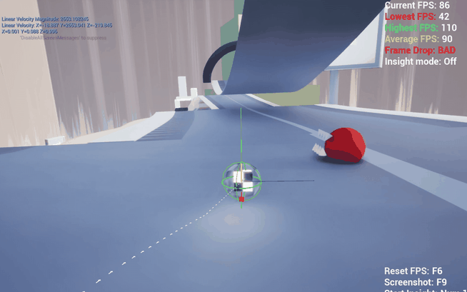

Hamsterballin'
Track 1 Level Design and Item Blueprint Scripting

Project at a Glance
My Core Contributions
- Designed Track 1 routes, elevation changes, slopes, and racing rhythm.
- Rapidly prototyped traps in UE5 Blueprint to test readability and fun.
- Implemented item logic, including items that entered the final game.
Project Overview
Hamsterballin' is a competitive arcade racing game. Players control characters inside hamster balls, rolling, bouncing, and racing across themed tracks while using routes, shortcuts, and items to disrupt opponents. Unlike a traditional kart racer, the physical motion of the ball is central to route judgment and control rhythm.
My Work
- Track 1 Level Design: Designed Track 1 around the hamster ball's rolling and bouncing movement, organizing routes and racing rhythm.
- Item Blueprints: Implemented Blueprint logic for selected items.
- Final Implementation: Some items I worked on entered the final game.
Development-Stage Validation
Track 1 Segments
These four clips show development-stage runs through Track 1. I used them to evaluate route readability at speed, slope transitions, landing-point judgment, and overall racing rhythm.


UE5 Blueprint Trap Prototypes
Early in development, I built these four trap prototypes directly in UE5 Blueprint. The goal was to test quickly and inexpensively whether traps could create clear, readable, and enjoyable interactions within rolling races before committing to further iteration.



Design Focus
Track Design and Ball Physics
The hamster ball rolls continuously and bounces from slopes and collisions. The track must let players anticipate turns, edges, landing points, and speed changes rather than rely on traditional vehicle steering.
Readability in Multiplayer Racing
Multiple players and item effects share the track. Routes, obstacles, and shortcuts must remain legible so players can identify the way forward while moving quickly and disrupting one another.
Game Screenshots


The still images above come from the public Steam page. The Track 1 and trap GIFs are my development-stage records and document my individual design and prototype-validation work.